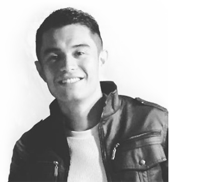

DANNY CORTES
MOBILE DEVELOPER

Biography
Award winning innovative and logical thinking Mobile Developer with vast knowledge of leveraging technology, designing, coding and deploying sophisticated techniques; achievement-oriented, able to overcome issues, capture requirements and implement methodologies that maximize performance and deliver outstanding, engaging products.
I am Multimedia Engineer graduated at the "Nueva Granada" University in 2012, with 9 years of experience in software development.
I like to research, innovate and create products that generate positive changes in our society. I like cycling, traveling and learn new things.
Also I do project management, and count with developers and designers, if you need a large project within a short time, you can count on me for its development.
I AM
- NameDanny Cortes
- Date of birthFebruary 14, 1988
- AddressLucca Of 503 Zipaquira, Colombia
- Emaildannycortesme@gmail.com
- Phone(57) 3142160428
- Skypedannycortesv
Professional Skills
FLUTTER
DART
FIREBASE
FLARE
JAVASCRIPT
STARLING / FEATHERS
REACT NATIVE
CREATIVE
PHOTOSHOP
PROFESSIONAL EMPLOYMENT EXPERIENCE AND CAREER HISTORY
Both professional and personal references are available on request.
- 2008 Cibercol LtdaBackend Developer / MySQL & PHP: PHP Development • PostgresSQL • PHP • Developed comprehensive knowledge of backend standards and practices
- 2009 - 2019 Standaju S.A.S.Mobile Flash Lite Developer / AS3 Development: AS3 and Flash Lite Development - Integrating apps with the Facebook SDK for Web and Desktop
- 2011 Colombia en LineaAS3 Developer / Flash Professional: Lucca Of 503 Zipaquira, Colombia
- 2012 Hi Media Digital Mobile Adobe Air Developer: Develop mobile apps (for iOS) on AS3 using the classical display list
- 2013 Siete Interactivo AS3 Freelance Developer: Kinect Development • AS3 • Flash Builder • Developed client-side games for social networks. Integrating apps with the Facebook SDK for Web and Desktop
- 2014 Imaginamos S.A.SMobile Adobe Air Freelance Developer (AS3, Starling): Oversaw game development on AS3 and adobe air for mobile (iOS and Android). Preparing and reviewing game assets for numerous production stages using Adobe Air. Extremely detail-oriented, analysing cases, testing and juggling projects to deadlines.
- 2013 to presentBytelf S.A.S.Mobile Developer / Project Manager: Created and implemented process maps and workflow to oversee concept through to production and delivery. Liasing closely with the engineering and design teams to resolve issues and create outstanding products. Integrating apps with the Facebook SDK for Web and Desktop.
- 2011 to presentTetheree Inc.Mobile & NUI Developer: Kinect & Leap Motion development using native extensions on Adobe Air. Game prototype development using Adobe Air (AS3), Starling, Feathers UI. Collaborating with teams to capture requirements, define work scopes plan development tasks. Playing a pivotal role in all phases of the software development and testing cycle.
PERSONAL AIMS • CHARACTER VALUE • GOALS • FUTURE POTENTIAL
Range of abilities that can bring to any new role:
- Optimising technology methodologies, outlining scopes, gathering intelligence and capturing requirements
- Acting as the conduit for mobile development knowledge and recommending options and software
- Establishing objectives, workflow, the development life cycle and shaping solutions across technologies
- Adhering to standards and guidelines, testing progress using staged interventions and mechanisms
- Documenting progress and resolving technical queries with a keen eye for design and user experience
WORK EXCELLENCIES • CAPABILITIES • KEY ACHIEVEMENTS
- Won “Best iOS App of 2013 in Colombia” in Dec 2013 - organised by The App Date
- Won “Best Social Mobile App of 2012 in Colombia” in Dec 2012 - organised by The App Date
- 1 of my apps classified at “Best 10 Latin America Apps” in Jun 2012 - again organised by AppCircus
- 2 of my apps classified at “Best 10 Colombian Apps” in Nov 2011 - organised by AppCircus
- Awarded 4th place at Reto Flash Lite in Jan 2011 - organised by Adobe User Group Colombia & HiMedia Digital
- Developing fun, scalable multiplatform games, from design review, prototype to production
EDUCATION • QUALIFICATIONS • COURSES • TRAINING
- Jun 2005 - Jun 2007“Juan N. Corpas” University (Music, Classical Piano)
- Jun 2007 - Dec 2011“Nueva Granada UMNG” University (Multimedia Engineer)
- 2015Innovation Management at European Innovation Academy / Nice, France